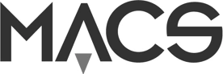
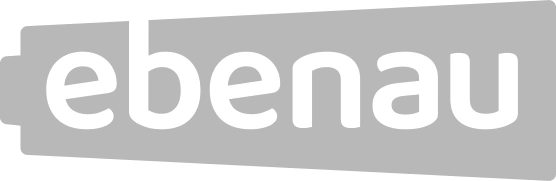
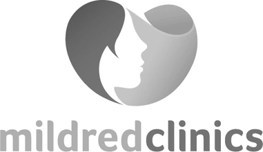
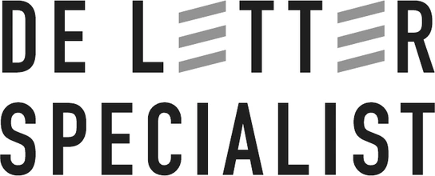
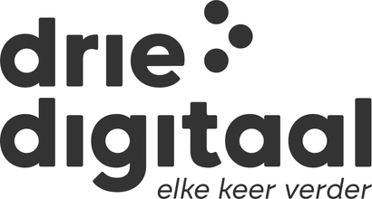
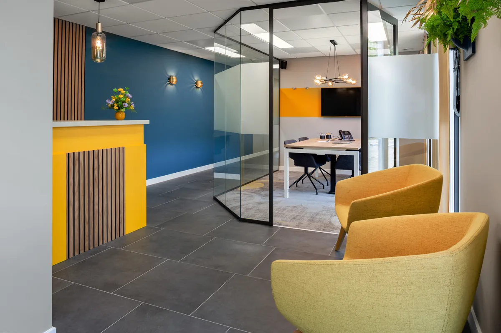
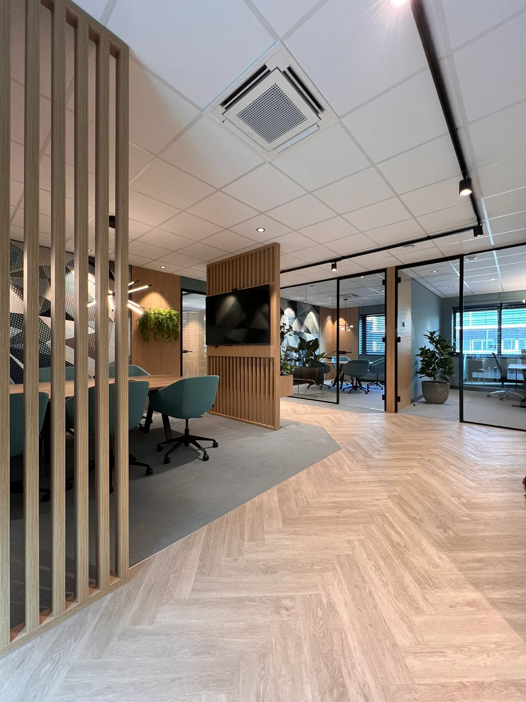
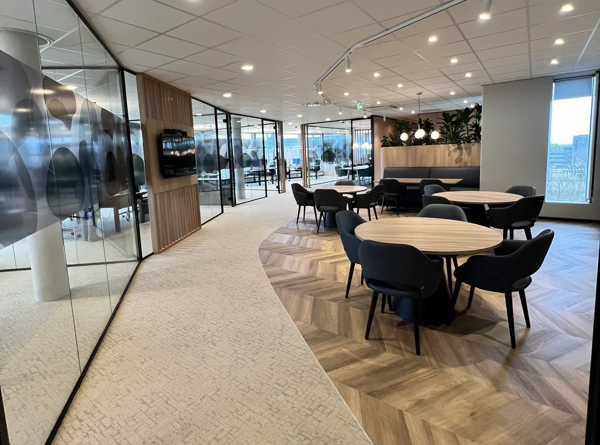
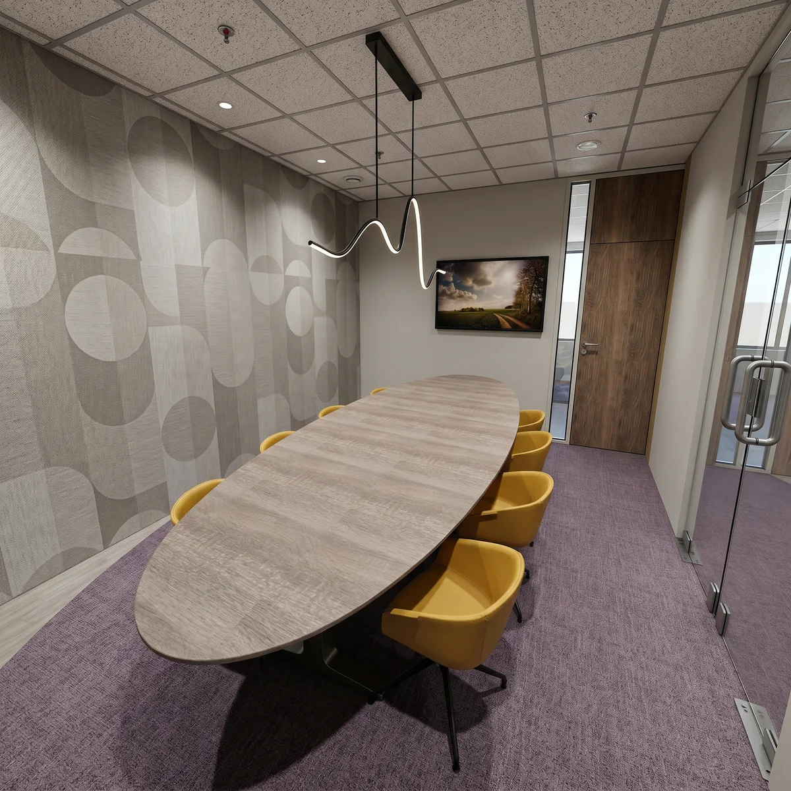
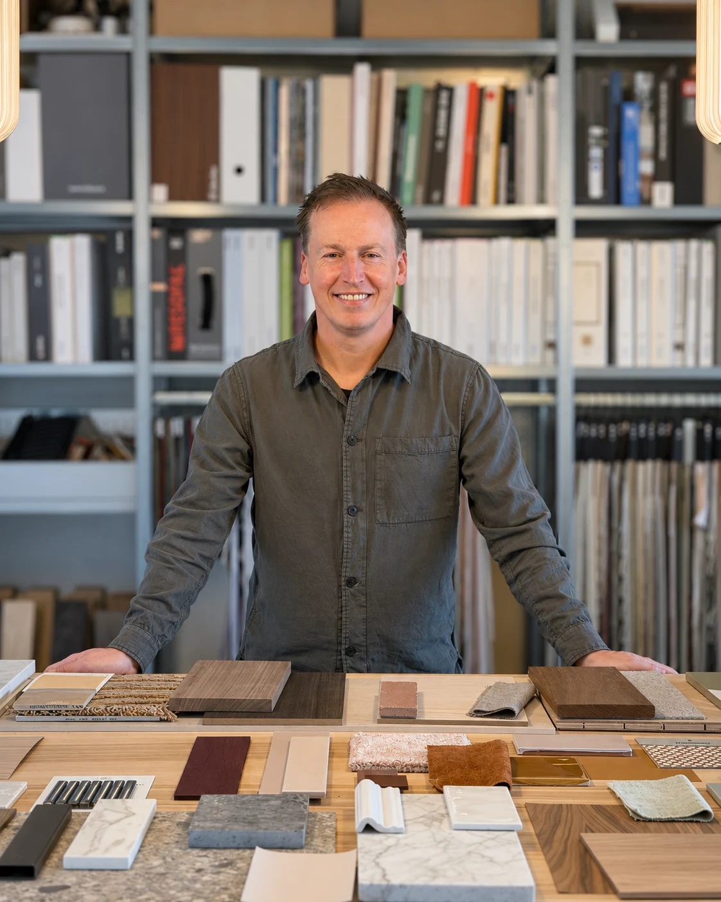

Studio Van der Horst · Gevestigd in Eindhoven
Kantoorinterieur dat meegroeit met je team
Studio Van der Horst ontwerpt kantoorinterieurs vanuit merk en werkcultuur. Voor MKB-bedrijven in Brabant en Noord-Limburg, van eerste indeling tot begeleiding van de realisatie.
Ontwerpen voor onder andere





Het kantoor als bestemming
Wat maakt jullie kantoor de reis waard?
Mensen komen naar kantoor voor wat thuis niet lukt. Herkennen jullie een van deze vragen?

Welkom heten
Ons kantoor past niet meer bij ons merk.
Jacobs Verzekerd
Bekijk project
Concentreren
Er is te veel onrust en te weinig concentratie.
MACS
Bekijk project
Samenwerken
Ons team werkt hybride, maar het kantoor ondersteunt dat niet.
Van Breda Risk & Benefits
Bekijk project
Nieuw beginnen
We verhuizen en willen het vanaf het begin goed neerzetten.
Ebenau BV
Bekijk projectLiever eerst zelf verkennen?
Waar staan jullie nu?
Elke scan duurt 5 minuten, is vrijblijvend en geeft direct richting.

“Er was oog voor detail en gevoel voor sfeer. Wij zijn dan ook zeer tevreden met het resultaat en kunnen VDH alleen maar aanbevelen!”
Aangenaam, ik ben Fred
Een kantoor begint bij de mensen die er werken.
Ik ontwerp kantoren vanuit hoe jullie werken, niet vanuit een standaardindeling. Ik denk persoonlijk mee en houd de lijnen kort.
Begrijpen
We brengen werkvormen, bezetting en knelpunten in kaart en bepalen samen de uitgangspunten.
Ontwerpen
Indeling, materiaal, kleur en licht, met 3D-visualisaties zodat jullie vooraf zien hoe het wordt.
Realiseren
Kleine projecten begeleid ik zelf, grotere samen met vertrouwde aannemers en specialisten.
Studio Van der Horst bouwt voort op de ervaring van VDH Bedrijfsinterieurs.
Een goed begin is een gesprek
Vertel wat er speelt
in jullie kantoor.
Of jullie nu groeien, verhuizen of anders willen werken: ik denk graag mee. Een kennismaking is vrijblijvend.
Ik neem binnen 48 uur contact op om jullie vraag en een passende vervolgstap te bespreken.